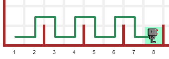

Bonjour programmeur anonyme,
Votre mission, si vous l’accepter, consiste à lire les descriptions qui suivent et à écrire des programmes permettant d’accomplir les tâches qui y sont décrites.
Vous n’avez pas à écrire des programmes pour toutes ces tâches à ce moment-ci. L’idée est de vous permettre de vous familiariser avec la façon dont Reeborg agit et d’identifier des patrons récurrents dans les diverses solutions.
Lorsque vous allez écrire vos programmes, vous aurez l’avantage de voir le monde dans son ensemble. Vous devriez chercher à vous identifier à Reeborg, qui ne voit que le carré où il se trouve, et imaginer comment vous pouvez vous baser sur cette vue limitée pour décider quelle devrait être la prochaine action.
En utilisant “l’entreposage local” (Local Storage), le Monde de Reeborg se souvient du dernier programme que vous avez exécuté dans votre navigateur (Chrome ou Firefox). Cependant, ce serait parfois utile de sauvegarder un certain programme soit sur votre ordinateur ou sur un clé usb. Pour ce faire, vous n’avez qu’à cliquer sur le bouton Sauvegarder à la droite de l’onglet pour l’éditeur Python. De la même façon, vous pouvez récupérer un programme en cliquant sur le bouton Charger.
Si vous
sauvegardez un programme, il serait probablement utile d’ajouter de
l’information indiquant pour quelle monde ce programme représente une
solution. Une façon de le faire est d’ajouter un commentaire - ce que
vous savez comment faire si vous avez lu les leçons précédentes. Une
autre façon, peut-être plus utile, est d’avoir comme toute première
instruction Monde("nom du monde ici");. Par exemple, une
solution au monde But 1 aurait comme première instruction:
Monde("But 1")
avance()
avance()
À votre tour!
Essayez d’exécuter ce programme sans sélectionner But 1 en premier. Puis, exécuter ce programme une deuxième fois sans rien changer d’autre.
Examinez les mondes Centrer 1 à Centrer 3. Dans chaque cas, écrivez un programme faisant en sorte que Reeborg dépose un jeton au centre géométrique de la pièce rectangulaire dans laquelle il se trouve.
À votre tour!
Écrivez au moins un programme pour un de ces mondes.
Plus tard, vous serez en mesure d’écrire un programme unique permettant à Reeborg de trouver le centre géométrique de n’importe quelle salle rectangulaire (ayant des côtés de dimension impaire) et d’y déposer un jeton.
Examinez les mondes Autour 1 à Autour 4. Pour au moins un de ces mondes, écrivez un programme faisant en sorte que Reeborg fasse le tour du monde, en suivant un mur, et retourne à son point de départ.
Plus tard, vous verrez comment on peut écrire un programme beaucoup plus court et qui peut permettre à Reeborg de faire le tour de n’importe quel de ces 4 mondes, et de tout autre monde semblable.
Reeborg est perdu dans un labyrinthe. Jetez un coup d’oeil sur les mondes Labyrinthe 1 et Labyrinthe 2. Dans chaque cas, écrivez un programme qui permet à Reeborg de trouver la sortie.
Plus tard, vous serez capable d’écrire un programme unique permettant à Reeborg de sortir de ces deux labyrinthes et, en fait de sortir probablement de n’importe quel labyrinthe que vous pourriez concevoir.
Reeborg va participer à une course; il s’agit du 110 mètres haies, en préparation pour les jeux olympiques. Examinez le monde Haies 1 et écrivez un programme permettant à Reeborg de terminer la course, en demeurant aussi près que possible du sol lorsqu’il saute les haies:

À votre tour!
Écrivez un programme pour ce monde. Notez à commbien de reprises vous répétez certaines séries d’instructions.
Lorsque vous aurez réussi à écrire un tel programme, vous voudrez peut-être l’adapter au monde Haies 2: il s’agit d’une course intérieure, et donc plus courte. (En fait, c’est celle illustrée ci-dessus. )
Lorsque vous en aurez terminé avec ces deux courses, vous voudrez peut-être tenter votre chance avec celle des haies inégalement espacées Haies 3 ou celle des haies très irrégulières Haies 4.
Reeborg est à la ferme de sa tante et c’est le temps des récoltes. Sélectionnez un des mondes Récolte 1, Récolte 2 ou Récolte 3 et faites en sorte que Reeborg ramasse tous les jetons qui représentent des plantes à récolter.
Observez que les mondes Récolte 1 et Récolte 3 ont des rangées horizontales (ou verticales) ayant la même longueur alors que le monde Récolte 2 peut être vu comme ayant des rangées diagonales ayant la même longueur.
Pour une autre tâche, sélectionnez le monde Récolte 4 qui a eu lieu plus tôt dans la saison. Reeborg avait planté des graines de carottes; certaines avaient poussé correctement alors que d’autres graines n’avaient pas germées; d’autres encore avaient été semées trop rapprochées les unes des autres. Reeborg doit enlever les carottes en excès, resemer aux endroits où les graines n’ont pas germé de façon à avoir une carotte (jeton) par endroit.
Vous n’avez pas à écrire un programme à ce moment-ci. Cependant, pensez à quoi aurait l’air un tel programme.
C’était une belle journée ensoleillée. Reeborg jouait dehors avec son amie. Soudainement, la pluie se mit à tomber et Reeborg se rappela que les fenêtres de sa maison étaient toutes ouvertes. Reeborg alla donc chez lui pour fermer les fenêtres mais arrêta au seuil de la porte, indécis quant à la meilleure façon de procéder.
À votre tour!
Utilisez la commande construit_un_mur() et aidez Reeborg à fermer
les fenêtres de sa maison. Lorsque Reeborg aura terminé, il sera au
seuil de la porte, regardant la pluie tomber et attendra patiemment
qu’elle arrête pour qu’il puisse retourner jouer dehors. Le monde à
sélectionner est Tempête 1.
Erdna, l’amie de Reeborg, vit dans une plus grande maison illustrée dans Tempête 2. Erdna jouait avec Reeborg lorsque la pluie s’est mise à tomber. Aidez Erdna à fermer les fenêtres de sa maison.
Plus tard, vous serez capable d’écrire un seul programme permettant à Reeborg et à Erdna de fermer les fenêtres de leur maison ... mais ça vous demandera de la réflexion.
Le vent a soufflé violemment la nuit dernière. Il y a des déchets partout autour de la maison de Reeborg. Ses parents lui demandent de nettoyer le trottoir qui mène à la rue Tempête 3, ainsi que l’allée Tempête 4.
Reeborg doit ramasser tous les déchets (représentés par des jetons), et
les mettre dans la poubelle en s’assurant de fermer le couvercle à
l’aide de l’instruction construit_un_mur().
Les parents de Reeborg sont tellement content de son travail de nettoyage qu’ils lui demande de ramasser tous les déchets qui se sont retrouvés dans la cour, tel qu’illustré dans Tempête 5.
Plus tard, vous serez en mesure d’écrire un seul programme qui permettra d’accomplir les trois tâches de nettoyage.
Écrire des programmes où toutes les instructions permettant à Reeborg d’accomplir une certaine tâche doivent être écrite une à la fois peut être très fastidieux. Cependant, ceci vous a permis de vous mettre dans la peau d’un robot et vous aidera à utiliser Javascript pour écrire des programmes beaucoup plus court permettant d’accomplir les diverses tâches confiées à Reeborg.
 Le monde de Reeborg
Le monde de Reeborg